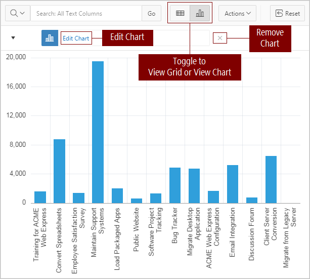
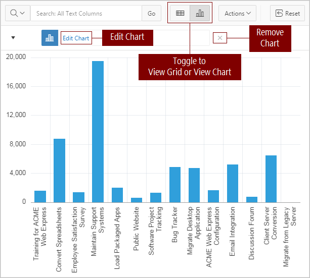

3.3.5 Using Charts in an Interactive Grid
Create a chart in an interactive grid by selecting Chart in the Actions menu. Edit or remove the chart with the Edit Chart link.
To create a chart from the data in an interactive grid:
The chart appears. The following is an example of a bar chart that depicts project budgets with a sum aggregation. To switch the view between Grid and Chart, click the toggle that now appears at the top of the interactive grid.

Description of the illustration ig_chart.png

Description of the illustration ig_chart.png
To reconfigure the chart, click the Edit Chart link.
To remove a chart, click the Remove Chart icon (X) adjacent to the chart link.
You can only create one chart at a time in an interactive grid. To create a second chart, reconfigure the existing chart by clicking Edit Chart, or delete it by clicking the adjacent Remove Chart icon (X).
See Also:
Filtering an Interactive GridParent topic: Using an Interactive Grid